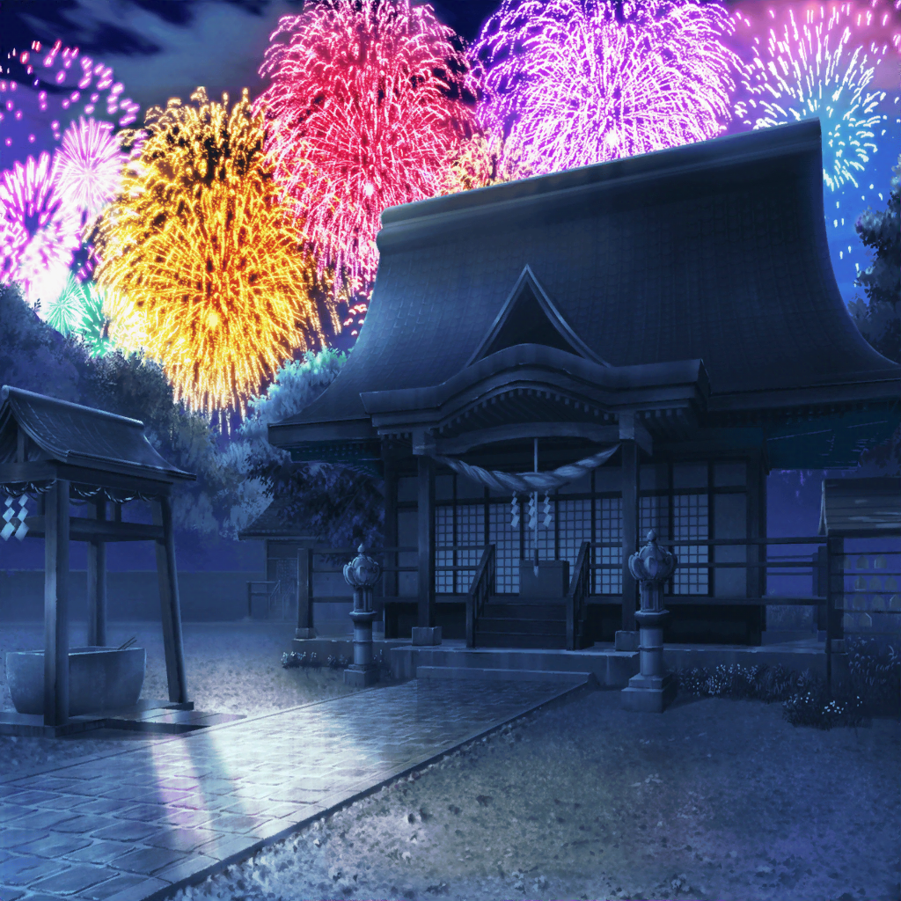

有咲の秘密の場所
有咲
それにしても、本当によくここがわかったな？
神社だってこと、何も言ってなかったのに……
たえ
有咲のことなら、なんだってわかる
有咲
はぁ？
沙綾
さっき香澄が縁日に行きたいって言った時に、
有咲言ってたでしょ？
香澄の思考パターンはわかりやすすぎる、って……
有咲
あ、ああ、言ったけど……
沙綾
それと同じこと。
有咲の性格とか好みとか考えて、なんとなくここかなって
有咲
それだけで、そんなにうまくいくか？
信じらんね……
沙綾
でも、現に私達、ここに来たでしょ？
たえ
有咲も香澄と一緒で、わかりやすいから
有咲
んなわけねーし！
私は、香澄みたいに単純じゃねーって！
たえ
有咲は香澄の逆
たえ
ひねくれてるから、誰でも思いつく高台じゃなさそうだし、
引きこもりだから、暗いところが好きそうだし
沙綾
ちょ、ちょっとおたえ！
その言い方だと、語弊が……
有咲
お、ま、えらー！
人がいないところで好き放題言いやがってー！
沙綾
ご、ごめんね！
そういうつもりじゃなくてっ！
たえ
でも、当たってたよ。だから、有咲に会えた
有咲
そ、それはそうだけどっ！
～～！
有咲
……ったく！ ふざけんなって感じだし！
沙綾
ご、ごめんね、有咲。
謝るから、そんなに顔を真っ赤にして怒らないで？ ね？
たえ
違うよ、沙綾。
たぶん有咲は照れてるんだと思う。
自分の考えをビシッと当てられて
有咲
ち、ちちち、ちげーから！
いきなり何言ってっ……！
な、なんで私が照れなきゃいけねーんだよ！？
有咲
……つ、つーか！
いつまでそんなところに突っ立ってるんだよ！？
ほら、こっち来いよ！ 花火見るぞ、花火っ！

沙綾
花火……すっごくキレイだね……
有咲
だろ？ なんたって、ここは私の『秘密の場所』だから
沙綾
有咲、よくこんな場所見つけられたね？
１番はじめは、なんでここで花火を見ようって思ったの？
有咲
ん～？ たしか……
花火がよく見えそうなところを探してたら、
たまたまここを見つけた……って感じだったかな？
沙綾
へえ、そうなんだ。
じゃあ、その時の有咲に感謝だね！
おかげで花火をこんなにキレイに見られるんだもん
たえ
香澄とりみ、今頃何してるんだろう？
沙綾
まだ、携帯つながらないね。
あ～あ、みんなで花火、見たかったな～
たえ
うん。
もし、ここで見てたら、
たぶん香澄、大喜びだったと思う
有咲
ふんっ……
騒がれて、他の人にここの存在を知られなくてよかったよ。
危ない危ない
有咲
（……ここから花火見たら、香澄のやつ、なんて言ってたかな？）
有咲
（香澄のことだから、どうせ――）
？？？
す、すごーーーいっ！
花火がすっごくキラキラしてるーーーっ！
有咲
そうそう……そんな感じで……
有咲
……って、え？
香澄
見て見て、りみりんっ！
ここからだと、花火がすっごくキラキラして見えるよー！
りみ
ほ……ホントだねっ
花火が近くに見える気がする……
有咲
か、香澄……！？
香澄
……あ……有咲？
沙綾
りみりんもいるの！？
たえ
……なんで？
香澄
ああああぁぁっ！ 有咲、さーや、おたえ！？
ねぇ、りみりん！ みんなこんなところにいたよー！
りみ
ほ、ホントだ……
香澄
よ、よかった〜！
みんなっ、会いたかったよぉ〜〜！
有咲
ちょっとよくわかんねーんだけど……
どうして香澄とりみが……？
お前ら、あの人混みの中でよく出会えたな
香澄
それがね、えへへ～♪
縁日のところで、たまたまりみりんと会えたの！
りみ
う、うん……すごい人だったんだけど……
ホントに偶然だったよね……
香澄
そうしたら、花火大会がはじまっちゃってさ、
もうふたりで、大慌てっ！
沙綾
それじゃあ、この場所のことは？
ふたりとも『秘密の場所』が
ここだって聞いてなかったでしょ？
香澄
えー！？ ここが有咲の秘密の場所なんだ！？
そうなんだぁー！
香澄
私達は、ふたりで花火がよく見えそうな場所を探してたら、
たまたまここに出たんだよ！ ね、りみりん？
りみ
う……うんっ。私は香澄ちゃんについていっただけだけど……
たえ
香澄、さっきの有咲とまったく同じこと言ってるね
沙綾
そっか……香澄と有咲、性格はまったく違っても
感覚はとっても似てるんだね。
なるほど、だから気が合うのか
有咲
は、はぁぁぁ！？
香澄と感覚が近いっ？
ふざけんな！ マジありえねーからっ！